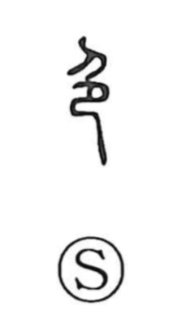

色

Uncategorized
Kun: iro | On: shoku, shiki
color ・ complexion ・ luster ・ sensuality
Explanation
In the ancient forms, 色 is a compound graph: a kneeling person is combined with a covering outline to show one person mounted from behind by another, bodies crossing. It first evoked the heightened excitement of mutual intercourse—hence words for sudden amazement or a face clouded in anger. Because intense feeling shows in the face, the character came to mean the color of the face or complexion, as in terms for a sick look that appears on one’s features. From “face color” it broadened to general senses of color and coloring, as well as luster and a gentle, calm tone. Dyes for red and white were once taken from grasses, so “color” was linked with 采 (sai), yielding compounds like 色彩 (shikisai), “hues, coloring.”